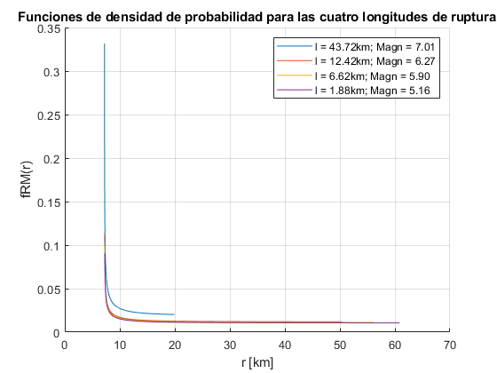

Contents
clear all close all clc
P3
P3.a
Definir fRM(r)
r_min = 7.2; % km L1 = 34.4; % km L2 = 62.3; % km L = 96.7; % km % Definr fRM(r) % La vamos a definir en función de 'l' para que quede con los subcasos syms r l % fRM(r,l) = piecewise( ... % and(l<L1,L1<L2),piecewise(r == r_min,l/(L-l),and(r<r1,r>r_min),2*(L1-l)/(L-l),and(r<r2,r>r1),(L-2*L1)/(L-l)), ... % and(L1<l,l<L2),piecewise(r==r_min,L1/(L-l),and(r2>r,r>r_min),(L2-l)/(L-l)), ... % and(l>L2,L2>L1),1); % % l<L1,L1<L2 % r11 = (r_min^2+(L1-l)^2)^0.5; % r12 = (r_min^2+(L2-l)^2)^0.5; % fRM1 = piecewise(r == r_min,l/(L-l),and(r<=r11,r>r_min),r/((L-l)*sqrt(r^2-r_min^2)),and(r<=r12,r>r11),r/((L-l)*sqrt(r^2-r_min^2))); % % L1<l<L2 % r22 = (r_min^2+(L2-l)^2)^0.5; % fRM2= piecewise(r==r_min,L1/(L-l),and(r22>=r,r>=r_min),r/((L-l)*sqrt(r^2-r_min^2))); % % L1<L2<l % fRM3 = piecewise(r==r_min,1,~(r==r_min),0);
P3.b
En Excel
Mmax = 7.38; % Magnitud de momento máxima (con L = 96.7) que la falla es capaz de producir
P3.c
En Excel
l_vals = [43.72; 12.43; 6.62; 1.882]; %km % magn = [0.95*Mmax; 0.85*Mmax; 0.8*Mmax;0.7*Mmax];
P3.d
for i = 1:length(l_vals) l = l_vals(i,1); l_val = l; if and(l_val<=L1,l_val<=L2) r1(i,1) = (r_min^2+(L1-l)^2)^0.5; r11 = r1(i,1); r2(i,1) = (r_min^2+(L2-l)^2)^0.5; r12 = r2(i,1); fRr(i,1) = piecewise(r == r_min,l/(L-l),and(r<=r11,r>r_min),r/((L-l)*sqrt(r^2-r_min^2)),and(r<=r12,r>r11),r/((L-l)*sqrt(r^2-r_min^2))); elseif and(l_val>L1, l_val<L2) r2(i,1) = (r_min^2+(L2-l)^2)^0.5; r22 = r2(i,1); fRr(i,1)= piecewise(r==r_min,L1/(L-l),and(r22>=r,r>=r_min),r/((L-l)*sqrt(r^2-r_min^2))); elseif l_val>=L2 fRr(i,1) = piecewise(r==r_min,1,~(r==r_min),0); % Coordenada 1 es fR(r), no tiene ni r1 ni r2 end end clear l_val r11 r12 r22 close all figure hold on grid on for i = 1:length(l_vals) fplot(fRr(i,1),[r_min r2(i,1)]) end xlabel('r [km]') ylabel('fRM(r)') title('Funciones de densidad de probabilidad para las cuatro longitudes de ruptura') legend('l = 43.72km; Magn = 7.01','l = 12.42km; Magn = 6.27','l = 6.62km; Magn = 5.90','l = 1.88km; Magn = 5.16')
P3.e
P3.e
% Para el caso de ruptura asociado a 0.7Mmax => l = 1.882km % Aproximar fR(r) numéricamente utilizando histogramas % 1. Dividir la falla en segmentos de longitud dx Dx = [0.1; 1; 2]; %km % Para cada división, calcular la distancia ri asociada pos_x = zeros(L/min(Dx),L/min(Dx)); x_0 = 0; for i = 1:length(Dx) for j = 1:L/Dx(i,1) pos_x(j,i) = x_0 + Dx(i,1)*j; end% Columna 1 contiene posición x cada 0.1, columna 2 cada 1km, columna 3 cada 2km end % Determinamos ri para cada segmento for i = 1:length(Dx) for j = 1:length(pos_x(:,i)) if pos_x(j,i) < L1 ri(j,i) = sqrt((L1 - pos_x(j,i))^2 + r_min^2); end if pos_x(j,i) > L1 ri(j,i) = sqrt((pos_x(j,i) - L1)^2 + r_min^2); end end end % Determinamos cantidad de veces que se repite un ri dentro del rango R DR = [1;2.5;5]; % km r2max = (r_min^2 + L2^2)^0.5; R_0 = r_min; for i = 1:length(DR) for j = 1:r2max/DR(i,1) R_range(j,i) = R_0 + DR(i,1)*(j-1); %Creo un rango de R+DR.... R+DR... end end % disp('Se muestra R_range') % disp(R_range) R_frec = zeros(length(R_range),length(Dx)); % Inicializo matriz de zeros(Rango_R1,Rango_R2,Rango_R3), pero nos quedamos con el mayor for i = 1:length(Dx) % Para cada Dx, justo calza también con para cada DR for k = 1:length(R_range(:,i))-1 % Para cada Rango_R, no pasa nada si partimos de for j = 1:length(ri(:,i)) % Para cada largo del Dx asociaso if and(ri(j,i) > R_range(k,i) , ri(j,i) < R_range(k+1,i)) % Si ri está dentro del rango p = R_frec(k,i); R_frec(k,i) = p + 1; % Si está dentro del rango, sumamos uno, si no entonces no pasa nada end end end end % for i = 1:length(DR) % total = sum(R_frec(:,i)); % R_frec_normalizado(:,i) = R_frec(:,i)/total; % end % disp('Se muestra R_frec') % disp(R_frec) % disp('Se muestra R_frec') % disp(R_frec_normalizado) % close all % Graficamos for i = 1:length(Dx) % Cambiar i = 1:length(Dx) for j = 1:length(R_range(:,i)) if ~(R_range(j,i) == 0) R_range_new(j,1) = R_range(j,i); end if ~(R_frec(j,i) == 0) R_frec_new(j,1) = R_frec(j,i); end end figure grid on myhist = histogram(R_frec_new); myhist.Normalization = 'pdf'; xlabel('r [km]') ylabel('f_{R}(r)') end % table(R_range,R_frec)
Error using histogram
Expected input number 2, edges, to be monotonically increasing.
Error in histogram>parseinput (line 293)
validateattributes(in,{'numeric','logical'},{'vector','nonempty', ...
Error in histogram (line 145)
[opts,passthrough,dispatchToCategorical] = parseinput(args,firstaxesinput);
Error in Prueba (line 155)
myhist = histogram(R_frec_new);